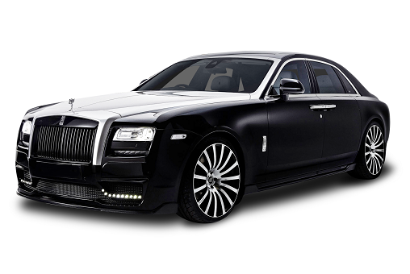
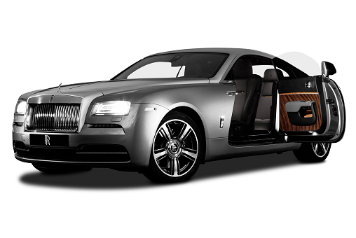
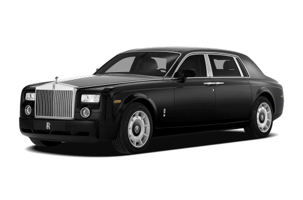

Rolls-Royce Motor Cars Limited was created as a wholly owned subsidiary of BMW in 1998 after BMW licensed the rights to the Rolls-Royce brand name and logo from Rolls-Royce PLC and acquired the rights to the Spirit of Ecstasy and Rolls-Royce grille shape trademarks from Volkswagen AG. Rolls-Royce Motor Cars Limited has been manufacturing Rolls-Royce branded cars since 2003.
Although the Rolls-Royce brand has been in use on vehicles since 1906, the Rolls-Royce Motor Cars subsidiary of BMW AG has no direct relationship to Rolls-Royce branded vehicles produced prior to 2003. The Bentley subsidiary of Volkswagen AG is the direct successor to Rolls-Royce Motors and the other various predecessor entities that produced Rolls-Royce and Bentley branded cars between the foundation of each company and 2003.
Current chief executive Torsten Muller-Otvos joined the company in January 2010, with a pledge to regain the quality standards that made Rolls-Royce famous. That year sales in China increased by 600%, making it the company's second largest market after the US.
Rolls-Royce Models
Ghost
Wraith
Phantom



Pricings:
Model
Price
Ghost
$311,900
Wraith
$320,500
Phantom
$450,000
Sales
The all-time high record of sales (beginning in 2005) was achieved in 2014, at 4,063 cars, topping 2016 sales by 52 cars. In 2011, Rolls-Royce Motor Cars Limited sold 3,538 cars, an increase of 31 percent compared to 2010, beating the previous sales record from 1978. The strong sales growth occurred in the Asia Pacific region, Britain and the Middle East with sales increases of 47 percent, 30 percent and 23 percent respectively.